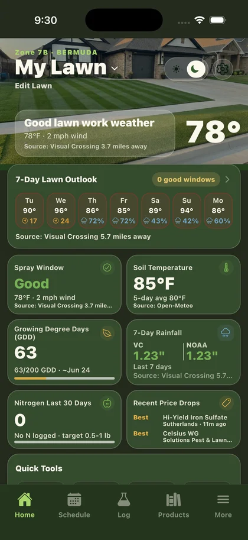
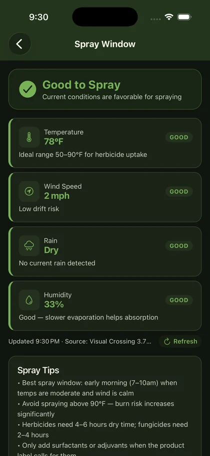

Built for Bermuda, Zoysia, St. Augustine, and cool-season lawns
Lawn Dominator is the lawn tracker app. Run your lawn like a season.
Track fertilizer and spray logs, monitor soil temperature and growing degree days, diagnose lawn problems, and plan tank mixes without juggling Notes, spreadsheets, and scattered product labels.
170+
Products in the library
4
Major grass lanes supported
1
System for the whole season

Bermuda schedules
Zoysia guidance
St. Augustine support
Cool-season planning
Product logging
GDD tracking
Soil temperature timing
Lawn diagnostics
Tank mix planning
Bermuda schedules
Zoysia guidance
St. Augustine support
Cool-season planning
Product logging
GDD tracking
Soil temperature timing
Lawn diagnostics
Tank mix planning
Why it hits
The app is built for people who care enough to notice the difference.
Control
You stop spraying blind.
Seasonal timing, soil temp, weather, and actual product guidance all land in one place so every move makes sense.
Memory
Your lawn finally keeps score.
Log every application, yard-work move, and photo so you know what changed, when it changed, and what worked.
Speed
Problems get diagnosed faster.
Use the diagnostic guide and product library to narrow down weeds, disease, pests, and deficiencies before damage spreads.
Core tools
Everything that makes a good lawn feel repeatable.
01
Seasonal schedule
Personalized timing for your grass type and zone, instead of random advice from five different Facebook groups.
02
Application log
Track what went down, how much you used, when you sprayed, and how your lawn responded.
03
Diagnostic guide
Pests, fungus, weeds, nutrient issues, and turf damage all get mapped into clearer next steps.
04
170+ product library
Active ingredients, rates, timing, safety notes, and trust signals so you can buy smarter and apply cleaner.
05
GDD and soil temp tracking
Weather-driven timing that makes growth regulator and pre-emergent decisions feel sharper.
06
Tank mix planning
Build your spray stack, calculate amounts by lawn size, and log the whole move in one flow.
From chaos to control
One season. Three moves.
Diagnose what you are actually seeing
Thin turf, weeds, disease pressure, bugs, off-color growth. Stop guessing and stop throwing down the wrong product.
Pick the right product and rate
Use the library, calculator, and trust notes to match the chemistry to the problem and the lawn size to the rate.
Track results and tighten the program
Log treatments, monitor weather-driven windows, and build a cleaner season the longer you use it.
What people remember
It turns lawn care into a repeatable system instead of a guessing game.
The hook is not just information. It is momentum. The app feels like a field manual, a treatment log, and a competitive edge all at once.
170+
Products organized for actual use
6
Products in a tank mix plan
4
Grass lanes with tailored guidance
5.0
Early App Store rating across 3 ratings
Download
Ready to track your lawn the right way?
Install Lawn Dominator on iPhone and build a real lawn program in minutes.
FAQ
What people search before they install.
What does Lawn Dominator help you track?
Lawn Dominator helps you track fertilizer, herbicide, fungicide, insecticide, and PGR applications, plus soil temperature, GDD, weather-aware spray timing, diagnostics, and tank mixes.
Who is Lawn Dominator for?
It is built for serious DIY lawn care users who want one place to run a Bermuda, Zoysia, St. Augustine, or cool-season lawn program without relying on Notes or spreadsheets.
Does Lawn Dominator work for soil temperature and GDD tracking?
Yes. The app includes soil temperature tracking and growing degree day tracking to help with pre-emergent timing, PGR reapplication windows, and other seasonal lawn decisions.